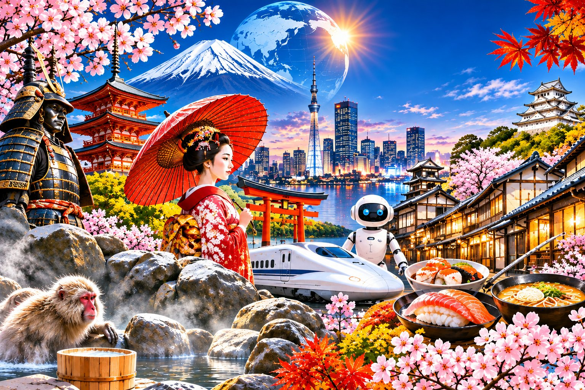

More than scenery
Pop culture
Anime, games and the latest technology. The city itself is the entertainment.
Anime, manga and games have become one of the big reasons to visit Japan. You will meet them all over the cities, from streets of specialist shops to museums and digital art.
Key points
Akihabara (Tokyo)
It grew up as an electronics district and is now packed with specialist shops for anime, games and figures.
Nakano Broadway (Tokyo)
A building full of small shops dealing in second-hand manga and anime books and rare collectibles.
Ghibli Museum, Mitaka (Tokyo)
A museum that immerses you in the world of Studio Ghibli. Entry is by advance reservation for a set date and time; no tickets are sold on the day.
teamLab museums (Tokyo)
Immersive digital art that surrounds you with light and moving images. They are very popular, so booking ahead is recommended.
Trip notes
Official information
Check the official sites for the latest opening hours, fees and transport information.